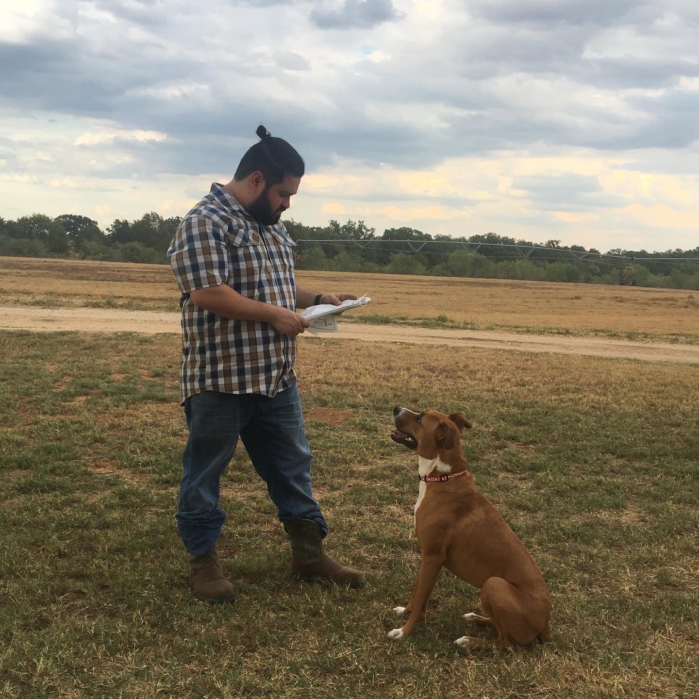

Our Journey
The Early Years
Like your typical millennials we had met at the usual Sunday knitting club. Not really, it’s more of your traditional online dating app story. Erica was so fascinated with Armando she knew she had to meet him. Being the smooth man Armando always is, he played it cool, slow, and always kept Erica interested with the diverse dates. Movies, bowling, dinners, and concerts; you know nothing too cliché. Armando and Erica first started dating in 2015 and moved into their first apartment the summer of 2017.
Starting a Millennial Family
Soon after their first year in their low budget apartment Armando and Erica sought out a bigger apartment as they quickly outgrew their first. Three months after they moved into their new apartment a new family member was added. Chico was a one-year-old boxer/pit mix that would destroy their couch, make them realize their bed was too small, and set their dreams to get him a yard one day where he could run around on his own.
The Country
 After 18 months in the second apartment and having issues with the office/property management they decided it was time to move. They moved into a trailer in Jourdanton Texas on a 30-acre family ranch where Chico had plenty of space to run around. They used this opportunity to save some money and payoff some bills so they could afford a place of their own one day.
The New House
May of 2020 as the housing market started to escalate, they knew that they needed to get into a house before things got out of hand. Within a week of looking for a new house they had submitted and had their offer accepted to what would be their first home. Chico and Hemmingway (Erica’s dog that always lived on the ranch) would now have a yard in the city to themselves.
The Engagement
July of 2021 Armando and Erica decided to move forward in their relationship buy going out to purchasing wedding rings. It wasn’t your formal proposal, but they make each other happy and knew they were ready for that next step. We had announced a target wedding date of 2-11-2023; 8 years to the date since they had first met.
Where We Are Today
Since we have lived together for the past five years, we have been able to collect all the necessities
for a home. We have been able to build up our appliances, dishware, decor, and furniture. We are asking
guest for our wedding to donate to our home fund so we can make home improvements and have money to take
a honeymoon. Unfortunately, Hemingway just past in February 2022 and we are keeping the family limited at
one fur baby as we are really wanting to put our funds into improving the home.
Thank you for taking the time to check out our site and reading up on a bit about our journey
together over the past years. If you would like to contribute to our “home fund” please click on the
button below.